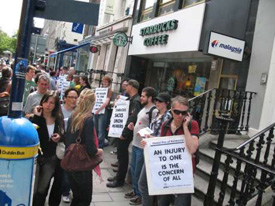

Submitted on Sat, 08/02/2008 - 3:24pm
Headlines:
- IWW shop scores 3-year contract, raises, healthcare
- Restaurant joins Wild Edibles boycott
- Bermuda public servants, police fight government
Featured Articles:
- Japan IWW delegation at the G8 protests
- Mexican teachers struggle for union democracy
- Utah Phillips interview
Download a free PDF copy of this issue.
Submitted on Wed, 07/30/2008 - 8:44pm
 IWW Delivers Cake to Mall Of America Starbucks Workers
IWW Delivers Cake to Mall Of America Starbucks Workers
Saturday June 26 was like any other busy Saturday at the Mall of America 1 Starbucks. A barista had called in sick during the morning shift, another had walked out in disgust the weekend prior. A Manager from another store was covering the shift of a barista who had been fired for union activity two weeks before. The store was shortstaffed, and the lines of customers were long.
But this Saturday was different. By 3:00, the grinding cacaphony of the frappuccino blenders died down, as a chorus of Solidarity Forever echoed through the Mall.
“When the union’s inspiration through the workers’ blood shall run…”
Workers stepped back from their tasks to crowd around the front counter. Managers looked on in silence. About two dozen Wobblies streamed into the Mall of America 1 Starbucks to welcome the workers to the union… with a cake.
Submitted on Tue, 07/22/2008 - 12:12pm
For Immediate Release:
Starbucks Workers Union/Industrial Workers of the World (IWW)
Contact: Erik Forman, 612-245-4871
July 21, 2008
Starbucks Baristas at the Mall of America Stop Work to Protest Store Closures
Workers Demand Right to Transfer and Fair Severance for Affected Employees
Press Conference July 22, 12 noon, Mall of America Northside Parking Lot
Twin Cities, MN- Baristas at the Mall of America Starbucks walked off
the café floor today and delivered a demand letter to management
calling for just treatment of all employees affected by Starbucks’
closure of stores nationwide. The surprise job action comes in the wake
of the coffee giant’s announcement that it will close 600 stores,
including 27 in Minnesota.
The baristas demanded an option to transfer to other stores and a fair
severance package for affected workers. Starbucks reportedly plans to
give workers just one month notice before laying them off with a paltry
two weeks’ pay The company will insist that some baristas transfer and
will revoke severance pay if transfer offers are refused.
Submitted on Fri, 07/11/2008 - 3:08am
By J. Pierce and Steve O.
The Bay Area IWW held an informational leafleting at a Starbucks cafe in Alameda, CA., at the busy intersection of Park Street and Central Avenue on Sunday July 6. Making good contact with the baristas inside, and a few passers-by who happened also to be Starbucks employees, we expressed our solidarity and offered our support in their efforts to gain more control over their jobs.
The demonstration was small, as it was organized at the last minute. The IWW members present made sure that the workers inside were aware that this demonstration was in solidarity with Grand Rapids, Michigan IWW member and Starbucks Barista Cole Dorsey and CNT Starbucks Barista, Monica. The organizers also made it clear to the baristas in Alameda that this demonstration did not target them and that the Starbucks Union is not (yet) calling for a boycott of Starbucks.
Submitted on Fri, 07/11/2008 - 2:47am

Originally posted at anarkismo.net
Dublin Report:
From 12 pm a small group of us decided to leaflet inside some of the
other Dublin Starbucks preliminary to the main demonstration on the one
in Dame Street. We started upstairs in BT2 Grafton Street – some
leaflets were got into the hands of staff behind the bar – but a BT2
security guard is hot on our heels snaffling and crumpling paper as he
goes. No security or management presense at all in Dawson street where
we get a more leisurely stroll and distribute a good number of leaflets
– staff and customers read with interest. Similarly in a fairly
deserted Starbucks in the IFSC.
Finally we get back to Dame Street and do another quick run around
inside. A minute later we are greeted by Irene; district manager of
Starbuck’s Dublin. She is icely and formally polite informing us that
we are welcome to protest peacefully but not to leaflet inside the
premises and to check in any time for refreshments . We decline the
offer. Then she turns paranoid asking us if we are recording her
(though we have neither the equipment or the inclination!)– turns back
in and is not seen again.
The crowd in Dame Street quickly swells to over 30: with WSM members
and many other activists; mostly but not exclusively libertarian. The
atmosphere is cheerful through out and people manage to engage with
workers on several occasions. Encouraged we head back to Dawson Street
and again up to 30 people throng around it; a very strong presense at a
quite small entrance.